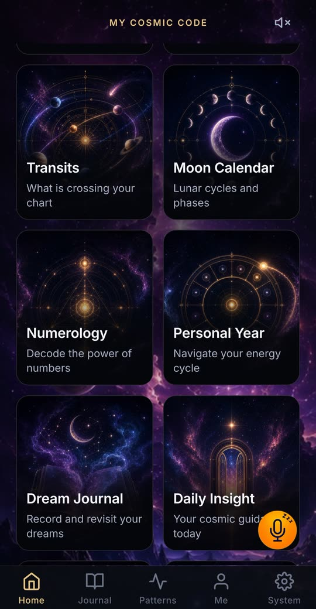

चंद्र कैलेंडर: कलाएँ और चंद्रमा की राशि, दिन-ब-दिन
चंद्रमा लगभग 29.5 दिनों में अपनी सभी कलाओं से गुज़रता है और हर दो-तीन दिन में राशि बदलता है। My Cosmic Code दोनों दिखाता है, आज रात की कला और वह राशि जिसमें चंद्रमा इस समय है, आपकी अपनी जन्म कुंडली के चंद्रमा के साथ।
तारीख़ के हिसाब से चंद्र कला और चंद्र राशि
एक तारीख़ चुनें और चंद्रमा की कला, उसका कितना हिस्सा प्रकाशित है और वह किस राशि में है, देखें, साथ में अगले सात दिन भी। शहर जोड़ें तो दिन और समय स्थानीय समय में दिखेंगे।
क्या आप सूचना चाहते हैं जब कोई ग्रह आपकी राशि में आए या उससे जाए, वक्री हो, या आपकी राशि में अमावस्या या पूर्णिमा पड़े? ये सूचनाएँ सिर्फ़ ऐप में मिलती हैं: इसे Google Play से इंस्टॉल करें।

चंद्र कैलेंडर: अक्टूबर 2026 – नवंबर 2026
समय: भारतीय मानक समय। राशि वह है जिसमें दिन की शुरुआत में चंद्रमा होता है; तीर दिखाता है कि वह अगली राशि में कब प्रवेश करता है।
| दिन | कला | चंद्र राशि |
|---|---|---|
| गुरु, 1 अक्टू॰ | 🌖 घटता उत्तल चंद्र | मिथुन |
| शुक्र, 2 अक्टू॰ | 🌖 घटता उत्तल चंद्र | मिथुन |
| शनि, 3 अक्टू॰ | 🌗 अंतिम चतुर्थांश 18:55 | मिथुन → कर्क 01:24 |
| रवि, 4 अक्टू॰ | 🌘 घटता अर्धचंद्र | कर्क |
| सोम, 5 अक्टू॰ | 🌘 घटता अर्धचंद्र | कर्क → सिंह 04:24 |
| मंगल, 6 अक्टू॰ | 🌘 घटता अर्धचंद्र | सिंह |
| बुध, 7 अक्टू॰ | 🌘 घटता अर्धचंद्र | सिंह → कन्या 08:22 |
| गुरु, 8 अक्टू॰ | 🌘 घटता अर्धचंद्र | कन्या |
| शुक्र, 9 अक्टू॰ | 🌘 घटता अर्धचंद्र | कन्या → तुला 13:40 |
| शनि, 10 अक्टू॰ | 🌑 अमावस्या 21:20 | तुला |
| रवि, 11 अक्टू॰ | 🌒 बढ़ता अर्धचंद्र | तुला → वृश्चिक 20:51 |
| सोम, 12 अक्टू॰ | 🌒 बढ़ता अर्धचंद्र | वृश्चिक |
| मंगल, 13 अक्टू॰ | 🌒 बढ़ता अर्धचंद्र | वृश्चिक |
| बुध, 14 अक्टू॰ | 🌒 बढ़ता अर्धचंद्र | वृश्चिक → धनु 06:29 |
| गुरु, 15 अक्टू॰ | 🌒 बढ़ता अर्धचंद्र | धनु |
| शुक्र, 16 अक्टू॰ | 🌒 बढ़ता अर्धचंद्र | धनु → मकर 18:27 |
| शनि, 17 अक्टू॰ | 🌒 बढ़ता अर्धचंद्र | मकर |
| रवि, 18 अक्टू॰ | 🌓 प्रथम चतुर्थांश 21:43 | मकर |
| सोम, 19 अक्टू॰ | 🌔 बढ़ता उत्तल चंद्र | मकर → कुंभ 07:09 |
| मंगल, 20 अक्टू॰ | 🌔 बढ़ता उत्तल चंद्र | कुंभ |
| बुध, 21 अक्टू॰ | 🌔 बढ़ता उत्तल चंद्र | कुंभ → मीन 18:05 |
| गुरु, 22 अक्टू॰ | 🌔 बढ़ता उत्तल चंद्र | मीन |
| शुक्र, 23 अक्टू॰ | 🌔 बढ़ता उत्तल चंद्र | मीन |
| शनि, 24 अक्टू॰ | 🌔 बढ़ता उत्तल चंद्र | मीन → मेष 01:23 |
| रवि, 25 अक्टू॰ | 🌔 बढ़ता उत्तल चंद्र | मेष |
| सोम, 26 अक्टू॰ | 🌕 पूर्णिमा 09:42 | मेष → वृषभ 05:04 |
| मंगल, 27 अक्टू॰ | 🌖 घटता उत्तल चंद्र | वृषभ |
| बुध, 28 अक्टू॰ | 🌖 घटता उत्तल चंद्र | वृषभ → मिथुन 06:31 |
| गुरु, 29 अक्टू॰ | 🌖 घटता उत्तल चंद्र | मिथुन |
| शुक्र, 30 अक्टू॰ | 🌖 घटता उत्तल चंद्र | मिथुन → कर्क 07:35 |
| शनि, 31 अक्टू॰ | 🌖 घटता उत्तल चंद्र | कर्क |
| रवि, 1 नव॰ | 🌖 घटता उत्तल चंद्र | कर्क → सिंह 09:48 |
| सोम, 2 नव॰ | 🌗 अंतिम चतुर्थांश 01:58 | सिंह |
| मंगल, 3 नव॰ | 🌘 घटता अर्धचंद्र | सिंह → कन्या 13:57 |
| बुध, 4 नव॰ | 🌘 घटता अर्धचंद्र | कन्या |
| गुरु, 5 नव॰ | 🌘 घटता अर्धचंद्र | कन्या → तुला 20:08 |
| शुक्र, 6 नव॰ | 🌘 घटता अर्धचंद्र | तुला |
| शनि, 7 नव॰ | 🌘 घटता अर्धचंद्र | तुला |
| रवि, 8 नव॰ | 🌘 घटता अर्धचंद्र | तुला → वृश्चिक 04:10 |
| सोम, 9 नव॰ | 🌑 अमावस्या 12:32 | वृश्चिक |
| मंगल, 10 नव॰ | 🌒 बढ़ता अर्धचंद्र | वृश्चिक → धनु 14:06 |
| बुध, 11 नव॰ | 🌒 बढ़ता अर्धचंद्र | धनु |
| गुरु, 12 नव॰ | 🌒 बढ़ता अर्धचंद्र | धनु |
| शुक्र, 13 नव॰ | 🌒 बढ़ता अर्धचंद्र | धनु → मकर 01:57 |
| शनि, 14 नव॰ | 🌒 बढ़ता अर्धचंद्र | मकर |
| रवि, 15 नव॰ | 🌒 बढ़ता अर्धचंद्र | मकर → कुंभ 14:54 |
| सोम, 16 नव॰ | 🌒 बढ़ता अर्धचंद्र | कुंभ |
| मंगल, 17 नव॰ | 🌓 प्रथम चतुर्थांश 17:18 | कुंभ |
| बुध, 18 नव॰ | 🌔 बढ़ता उत्तल चंद्र | कुंभ → मीन 02:49 |
| गुरु, 19 नव॰ | 🌔 बढ़ता उत्तल चंद्र | मीन |
| शुक्र, 20 नव॰ | 🌔 बढ़ता उत्तल चंद्र | मीन → मेष 11:22 |
| शनि, 21 नव॰ | 🌔 बढ़ता उत्तल चंद्र | मेष |
| रवि, 22 नव॰ | 🌔 बढ़ता उत्तल चंद्र | मेष → वृषभ 15:39 |
| सोम, 23 नव॰ | 🌔 बढ़ता उत्तल चंद्र | वृषभ |
| मंगल, 24 नव॰ | 🌕 पूर्णिमा 20:24 | वृषभ → मिथुन 16:39 |
| बुध, 25 नव॰ | 🌖 घटता उत्तल चंद्र | मिथुन |
| गुरु, 26 नव॰ | 🌖 घटता उत्तल चंद्र | मिथुन → कर्क 16:21 |
| शुक्र, 27 नव॰ | 🌖 घटता उत्तल चंद्र | कर्क |
| शनि, 28 नव॰ | 🌖 घटता उत्तल चंद्र | कर्क → सिंह 16:50 |
| रवि, 29 नव॰ | 🌖 घटता उत्तल चंद्र | सिंह |
| सोम, 30 नव॰ | 🌖 घटता उत्तल चंद्र | सिंह → कन्या 19:42 |
आपको क्या दिखता है
- चंद्रमा की कलाएँ और चंद्र कैलेंडर।
- दिन-ब-दिन चंद्रमा की राशि, और Today कार्ड पर वह राशि जिसमें वह इस समय है।
- आपकी जन्म कुंडली से आपकी अपनी चंद्र राशि।
- Season Ahead: आपके ग्रहों पर आने वाले गोचरों की समयरेखा।
गणना आपके फ़ोन पर
कलाएँ और राशियाँ फ़ोन पर ही असली खगोलीय गणना से निकाली जाती हैं, इसलिए कैलेंडर ऑफ़लाइन भी काम करता है।
पूरी तरह निजी
ऐप में: न विज्ञापन, न एनालिटिक्स, न ट्रैकर, न अकाउंट। आपकी जन्म विवरण, कुंडली और डायरी सिर्फ़ आपके डिवाइस पर रहती हैं, और आप उन्हें ऐप में एक्सपोर्ट या डिलीट कर सकते हैं।
सवाल
चंद्रमा कितनी बार राशि बदलता है?
हर दो-तीन दिन में। यह 27 दिनों से थोड़े ज़्यादा समय में सभी बारह राशियों से गुज़र जाता है।
मेरी चंद्र राशि क्या है?
वह राशि जिसमें आपके जन्म के समय चंद्रमा था। चंद्रमा तेज़ चलता है, इसलिए ऐप इसे ढूँढने के लिए आपकी जन्म तिथि, समय और स्थान का उपयोग करता है।
क्या यह मुफ़्त है?
ऐप डाउनलोड करना मुफ़्त है, और इसका बड़ा हिस्सा मुफ़्त ही रहता है: आपका कॉस्मिक कोड, आपकी जन्म कुंडली के ग्रह, आज, अगले हफ़्ते का चंद्रमा, आज का कार्ड, स्वप्न शब्दकोश और आपकी डायरी। बाकी Google Play पर Pro और Max से खुलता है। कोई विज्ञापन नहीं।
और भी आज़माएँ
 ✦ ऑनलाइन मुफ़्तपश्चिमी जन्म कुंडलीआपका कॉस्मिक नक्शा
✦ ऑनलाइन मुफ़्तपश्चिमी जन्म कुंडलीआपका कॉस्मिक नक्शा ✦ ऑनलाइन मुफ़्तअंक ज्योतिषअंकों की शक्ति को समझें
✦ ऑनलाइन मुफ़्तअंक ज्योतिषअंकों की शक्ति को समझें ✦ ऑनलाइन मुफ़्तअनुकूलताआपके चार्ट कैसे मिलते हैं
✦ ऑनलाइन मुफ़्तअनुकूलताआपके चार्ट कैसे मिलते हैं ✦ ऑनलाइन मुफ़्तराशिफलचीनी, जापानी और वैदिक
✦ ऑनलाइन मुफ़्तराशिफलचीनी, जापानी और वैदिक ✦ ऑनलाइन मुफ़्तरात का आकाशअसली आकाश, आपके चार्ट से जुड़ा
✦ ऑनलाइन मुफ़्तरात का आकाशअसली आकाश, आपके चार्ट से जुड़ा ✦ ऑनलाइन मुफ़्तमेरी राशिआपकी सूर्य और चंद्र राशि
✦ ऑनलाइन मुफ़्तमेरी राशिआपकी सूर्य और चंद्र राशि ✦ ऑनलाइन मुफ़्तआज के ग्रहअभी चंद्रमा, ग्रह और वक्री ग्रह
✦ ऑनलाइन मुफ़्तआज के ग्रहअभी चंद्रमा, ग्रह और वक्री ग्रह ✦ ऑनलाइन मुफ़्तआज का कार्डपरदे वाले द्रष्टा से पूछें
✦ ऑनलाइन मुफ़्तआज का कार्डपरदे वाले द्रष्टा से पूछें
पश्चिमी जन्म कुंडली · चंद्र कैलेंडर · अंक ज्योतिष · राशि अनुकूलता · चीनी और वैदिक राशिफल · तारों का नक्शा · मेरी राशि · आज के ग्रह · आज का कार्ड